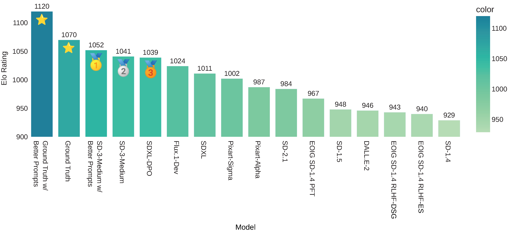

Measuring And Improving Engagement of Text-to-Image Generation Models
* Equal Contribution
ICLR 2025
Accepted at ICLR 2025
Get in touch with us at behavior-in-the-wild@googlegroups.com
- Engagement-Optimized Image Generation: We introduce the task of generating images optimized for user engagement, crucial in domains like advertising, fashion, and e-commerce.
- EngagingImageNet Dataset: A large-scale dataset with 168M tweets from 10,135 enterprise accounts (2007–2023), capturing image engagement metrics.
- EngageNet Model: A vision-language model trained to predict user engagement over images, outperforming common metrics like FID and aesthetics.
- Engagement Arena: The first automated benchmarking platform for ranking text-to-image models based on engaging image generation.
- Methods for Engagement Optimization: We optimize image generation for engagement via prompt conditioning, supervised fine-tuning, and RL-based alignment with EngageNet rewards.
Engagement Arena

BibTeX
@inproceedings{
khurana2025measuring,
title={Measuring And Improving Engagement of Text-to-Image Generation Models},
author={Varun Khurana and Yaman Kumar Singla and Jayakumar Subramanian and Changyou Chen and Rajiv Ratn Shah and zhiqiang xu and Balaji Krishnamurthy},
booktitle={The Thirteenth International Conference on Learning Representations},
year={2025},
url={https://openreview.net/forum?id=TmCcNuo03f}
}Acknowledgement
We thank Adobe for their generous sponsorship.